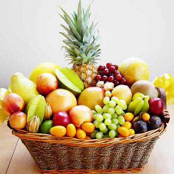

อาหารหมู่ที่ 4 วิตามินผลไม้
สำหรับอาหารหมู่ที่ 4 นั้นประกอบไปด้วยผลไม้ชนิดต่างๆ ไม่ว่าจะเป็น กล้วย ส้ม มะละกอ แอปเปิล ลำไย มังคุด และอื่นๆ ซึ่งผลไม้เหล่านี้จะให้สารอาหารประเภทวิตามินและเกลือแร่ ซึ่งเป็นสารที่จะช่วยทำให้ร่างกายของคนเรามีความแข็งแรงพร้อมทั้งมีแรงในการต้านทานโรค แถมยังมีกากใยอาหารที่ช่วยทำให้การขับถ่ายของลำไส้เป็นไปตามปกติอีกด้วย
ประเภทของสารอาหารหมู่ที่ 4ประเภทของสารอาหารที่จะได้รับจากอาหารหมู่นี้นั่นก็คือ เกลือแร่ ซึ่งเป็นเกลือแร่ที่จัดอยู่ในกลุ่มของสารอนินทรีย์ที่ร่างกายขาดไม่ได้เลย ทั้งนี้มีการแบ่งเกลือแร่ชนิดนี้ออกเป็น 2 ประเภทดังนี้
1. เกลือแร่ที่มนุษย์ต้องการในปริมาณที่มากกว่าวันละ 100 มิลลิกรัม คือ แมกนีเซียม โซเดียม กำมะถัน ฟอสฟอรัสโพแทสเซียม คลอรีน และแคลเซียม
2. เกลือแร่ที่มนุษย์ต้องการในปริมาณวันละ 2-3 มิลลิกรัม คือ เหล็ก โครเมียม ไอโอดีน ทองแดง โคบอลต์ สังกะสี แมงกานีส ซีลีเนียม ฟลูออรีนและโมลิบดีนัม
ประโยชน์ของสารอาหารหมู่ที่ 41. ช่วยควบคุมความเป็นกรด – ด่างในร่างกาย เพราะ โพแทสเซียม คลอรีน ฟอสฟอรัส และโซเดียม มีหน้าที่สำคัญในการช่วยควบคุมความเป็นกรด – ด่างในร่างกาย
2. ช่วยควบคุมสมดุลน้ำ เนื่องจากโพแทสเซียมและโซเดียมมีส่วนช่วยในการควบคุมความสมดุลของน้ำทั้งที่อยู่ภายในและภายนอกเซลล์
3. มีส่วนช่วยในการเร่งปฏิกิริยา เนื่องจากปฏิกิริยาหลายชนิดที่อยู่ในร่างกายจะดำเนินไปได้นั้น ต้องมีเกลือแร่เป็นตัวเร่ง เช่น แมกนีเซียม ถือเป็นตัวเร่งปฏิกิริยาที่มีความเกี่ยวข้องกับการเผาผลาญกลูโคสให้เกิดพลังงาน
ถ้าร่างกายขาดวิตามินจากผลไม้จะมีผลอย่างไรมีประโยชน์เช่นเดียวกับวิตามินในพืชผักและมีความจำเป็นต่อร่างกายเป็นอย่างมากเช่นกัน ซึ่งพบว่าหากขาดวิตามินเหล่านี้ไปก็จะส่งผลกระทบต่อร่างกายได้ดังนี้
- ทำให้ระบบภูมิต้านทานต่ำลง และเกิดการเจ็บป่วยได้ง่ายหรือมีสุขภาพที่อ่อนแอลงอย่างเห็นได้ชัด
- มักจะมีอาการท้องผูกบ่อยๆ รวมถึงทำให้ระบบการขับถ่ายแปรปรวนได้ เพราะได้รับใยอาหารที่มีในผลไม้น้อยเกินไป
- เสี่ยงต่อการเป็นโรคกระดูกอ่อนหรือกระดูกพรุน เนื่องจากขาดวิตามินและแร่ธาตุสำคัญที่จะช่วยเสริมสร้างความแข็งแรงให้กับกระดูกนั่นเอง
- อาจมีปัญหาตาฝ้าฟางและระบบประสาทผิดปกติ